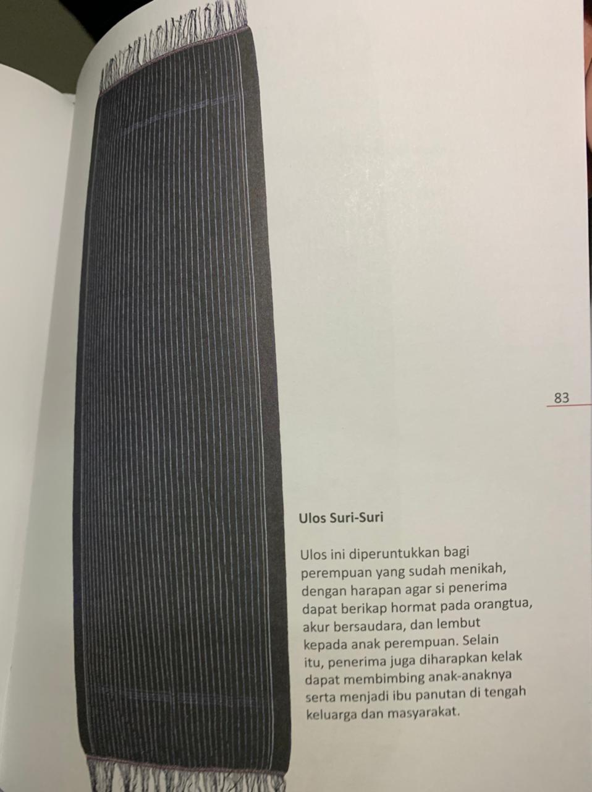

Ulos Suri-suri ini diberikan kepada perempuan yang sudah menikah dengan harapan kelak dapat membimbing anak-anaknya sarta menjadi ibu panutan di tengah keluarga dan masyarakat. Ulos ini memiliki makna Hormat pada orang tua, akur saudara, dan lembut kepada anak perempuan. Dan ulos ini digunakan oleh perempuan yang sudah menikah.
Ulos yang fungsinya dipakai sebagai pakaian pemusik Batak, namun sering juga digunakan untuk mangulasi pengantin oleh pihak parboru kepada putrinya yang menikah. Biasanya disebut juga dengan ulos gabe-gabe.
